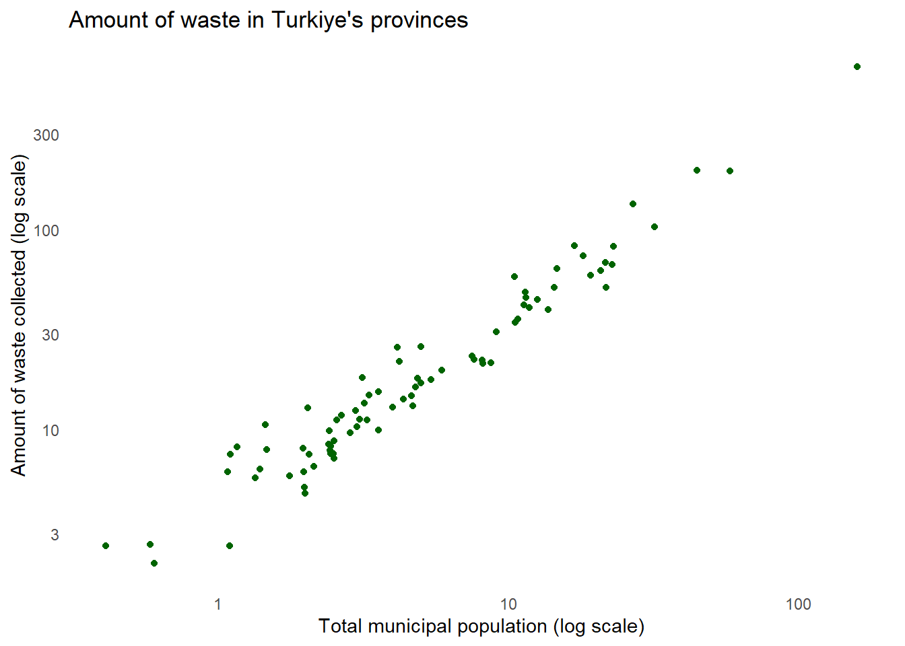

My project will provide insights about waste management, which is of vital importance to the world and humanity. I hope to convey the awareness and perspective I wish to share with you, since change begins with awareness, and we have to change our way so that our children can live in the world they deserve!
1. Are we aware?
Important fact: Are we aware that when we do not recycle waste or use it for energy consumption, it pollutes our groundwater, our soil, and the air through greenhouse gases emitted by the waste, ultimately reducing the quality of the food produced in our soil and our overall life quality?
We just complain, don’t we? Strawberries used to smell like strawberries, tomatoes used to taste different… right?
Unfortunately, complaining doesn’t fix anything, and it won’t. If we want to deserve to live in this world, we must work hard for our generation. The effort we do not put into our waste will heavily come back to haunt us and our children in this universe created with karma. Let’s quit complaining and start acting!
The scope: In my project, I will attempt to extract insights from several data collections on waste management in Turkiye. I will particularly focus on municipal waste statistics. Initially, I will analyze data on a national level, then move on to a provincial basis. Later, I will use time series methods to forecast future waste amount trends in Turkiye. Additionally, using clustering methods, I will group provinces based on their waste amounts behaviors.
The aim: In this project, my main goals are to increase awareness about waste issues, determine future waste quantities, investigate the waste levels of the provinces, and discuss both prevention strategies and proper disposal and recycling methods for unavoidable waste.
2. Data
I plan to use multiple data sources for analysis. The data I will utilize include waste quantities, waste types and population figures for Turkiye and its provinces.
2.1 Data Source
The references from which I have gathered the data may include:
The municipal waste amount data of Turkiye, which includes information such as the population of Turkiye and its 81 provinces’ municipalities, total waste amounts for the year 2022, the average waste amount per person, etc.:
Show the code
library(openxlsx)
Warning: package 'openxlsx' was built under R version 4.3.3
'data.frame': 88 obs. of 8 variables:
$ Belediye.atık.hizmeti.istatistikleri,.2022.Municipal.waste.services.statistics,.2022: chr NA "İl\nProvince" "Türkiye" "Adana" ...
$ X2 : chr "Toplam belediye nüfusu\nTotal municipal population" NA "80785141" "2274106" ...
$ X3 : chr "Toplam belediye sayısı \nTotal \nnumber of municipalities " NA "1391" "16" ...
$ X4 : chr "Atık hizmeti veren belediye \nsayısı\nNumber of municipalities providing waste services " NA "1389" "16" ...
$ X5 : chr "Atık hizmeti verilen belediye nüfusu\nPopulation of municipalities served by waste services " NA "80319403.100000009" "2260333.2000000002" ...
$ X6 : chr "Atık hizmeti\nverilen belediye\nnüfusunun\ntoplam belediye\nnüfusuna oranı (%)\nRate of municipal population se"| __truncated__ NA "99.423485687794994" "99.394364202899965" ...
$ X7 : chr " Toplanan \natık miktarı\n (Ton) \nAmount of\nwaste collected (Tonnes) " NA "30283756.564639971" "665694.61099999992" ...
$ X8 : chr "Kişi başı toplanan ortalama\n atık miktarı (Kg/kişi-gün)\nAmount of waste per capita (Kg/capita-day)" NA "1.0329906954638057" "0.80688141556067661" ...
Data including the amounts of collected municipal waste that are sent to municipal landfills, waste processing facilities (the waste sent to landfill sites, incineration plants and all the waste recovery facilities), and disposed of using other methods (disposals by burning in an open area, dumping into river/onto land and burying.):
This topic was chosen because it was realized that waste management is not given enough importance in Turkiye, and it is believed that carelessness should not continue in this matter. The importance of the subject is indisputable. By using the data sets mentioned above, it is aimed to reveal and analyze the current situation of waste management, to derive knowledge, and to contribute to the literature and our country.
Warning: package 'stringr' was built under R version 4.3.2
── Attaching core tidyverse packages ──────────────────────── tidyverse 2.0.0 ──
✔ dplyr 1.1.3 ✔ readr 2.1.4
✔ forcats 1.0.0 ✔ stringr 1.5.1
✔ ggplot2 3.4.4 ✔ tibble 3.2.1
✔ lubridate 1.9.3 ✔ tidyr 1.3.0
✔ purrr 1.0.2
── Conflicts ────────────────────────────────────────── tidyverse_conflicts() ──
✖ dplyr::filter() masks stats::filter()
✖ dplyr::lag() masks stats::lag()
ℹ Use the conflicted package (<http://conflicted.r-lib.org/>) to force all conflicts to become errors
Show the code
# remove unnecessary columnsmunicipal_waste <-select(municipal_waste, -X5) municipal_waste <-select(municipal_waste, -X6)# rename columnsmunicipal_waste <-rename(municipal_waste, "Provinces"="Belediye.atık.hizmeti.istatistikleri,.2022.Municipal.waste.services.statistics,.2022")municipal_waste <-rename(municipal_waste, "Total municipal population"="X2")municipal_waste <-rename(municipal_waste, "Total number of municipalities"="X3")municipal_waste <-rename(municipal_waste, "Number of municipalities providing waste services"="X4")municipal_waste <-rename(municipal_waste, "Amount of waste collected (Tonnes) "="X7")municipal_waste <-rename(municipal_waste, "Amount of waste per capita (Kg/capita-day) "="X8")# remove unnecessary rowsmunicipal_waste <- municipal_waste[-c(1, 2, 85, 86, 87, 88), ]# reorder row names that is disorderedrow.names(municipal_waste) <-NULLmunicipal_waste <- municipal_waste %>%mutate(row_id =row_number()) municipal_waste <- municipal_waste %>%select(row_id, everything()) municipal_waste <- municipal_waste[,-c(1)]# adjust necessary columns as numbersmunicipal_waste <- municipal_waste %>%mutate(across(-Provinces, ~as.numeric(as.character(.))))sapply(municipal_waste,class)
Provinces
"character"
Total municipal population
"numeric"
Total number of municipalities
"numeric"
Number of municipalities providing waste services
"numeric"
Amount of waste collected (Tonnes) \n
"numeric"
Amount of waste per capita (Kg/capita-day) \n
"numeric"
Show the code
head(municipal_waste)
Provinces Total municipal population Total number of municipalities
1 Türkiye 80785141 1391
2 Adana 2274106 16
3 Adıyaman 487642 23
4 Afyonkarahisar 588048 60
5 Ağrı 314539 12
6 Amasya 256679 8
Number of municipalities providing waste services
1 1389
2 16
3 22
4 60
5 12
6 8
Amount of waste collected (Tonnes) \n
1 30283756.6
2 665694.6
3 179724.1
4 198272.6
5 181116.0
6 111099.1
Amount of waste per capita (Kg/capita-day) \n
1 1.0329907
2 0.8068814
3 1.0190094
4 0.9282235
5 1.5796783
6 1.1915254
Show the code
summary(municipal_waste)
Provinces Total municipal population Total number of municipalities
Length:82 Min. : 41120 Min. : 4.00
Class :character 1st Qu.: 242100 1st Qu.: 11.00
Mode :character Median : 417945 Median : 16.00
Mean : 1970369 Mean : 33.93
3rd Qu.: 1139026 3rd Qu.: 21.00
Max. :80785141 Max. :1391.00
Number of municipalities providing waste services
Min. : 4.00
1st Qu.: 11.00
Median : 16.00
Mean : 33.88
3rd Qu.: 21.00
Max. :1389.00
Amount of waste collected (Tonnes) \n
Min. : 21392
1st Qu.: 81725
Median : 151235
Mean : 738628
3rd Qu.: 415882
Max. :30283757
Amount of waste per capita (Kg/capita-day) \n
Min. :0.6498
1st Qu.:0.8730
Median :0.9672
Mean :1.0679
3rd Qu.:1.1887
Max. :1.9962
In the first phase of this section, Exploratory Data Analysis (EDA), the data prepared for analysis is visualized to enable discoveries that are not immediately apparent at first glance. Later, relationships will be determined through regression analysis, future predictions will be made using time series methods, and provinces will be clustered according to their patterns using clustering methods.
3.1 Exploratory Data Analysis
“The greatest value of a picture is when it forces us to notice what we never expected to see.” John W. Tukey
For “municipal_waste” dataset:
Show the code
library(tidyverse)library(ggthemes)
Warning: package 'ggthemes' was built under R version 4.3.2
Show the code
library(ggrepel)
Warning: package 'ggrepel' was built under R version 4.3.2
Show the code
municipal_waste <- municipal_waste[-c(1), ]p <- municipal_waste |>ggplot(aes(`Total municipal population`/10^5, `Amount of waste collected (Tonnes) `/10^4)) p +geom_point(color ="darkgreen") +scale_x_continuous(trans ="log10") +scale_y_continuous(trans ="log10") +xlab("Total municipal population (log scale)") +ylab("Amount of waste collected (log scale)") +ggtitle("Amount of waste in Turkiye's provinces")+theme(line =element_blank(), rect =element_blank())

Show the code
p <-ggplot(municipal_waste, aes(x =reorder(Provinces, `Total number of municipalities`, FUN = sum), y =`Total number of municipalities`)) p +geom_bar(stat ="identity", fill="purple") +xlab("Provinces") +theme_calc() +ggtitle("Number of municipalities in provinces") +theme(axis.text.x =element_text(angle =90, hjust =1, size =6))
Show the code
# The provinces that produce largest amount of wasteThe_largest <- municipal_waste |>arrange(desc(`Amount of waste per capita (Kg/capita-day) `)) |>head(n =20)p <-ggplot(The_largest, aes(x =reorder(Provinces, `Amount of waste per capita (Kg/capita-day) `, FUN = sum),y =`Amount of waste per capita (Kg/capita-day) `))ggplot(The_largest, aes(x =`Amount of waste per capita (Kg/capita-day) `, y =reorder(Provinces, `Amount of waste per capita (Kg/capita-day) `, FUN = sum), color =`Amount of waste per capita (Kg/capita-day) `)) +geom_point(size =4) +geom_segment(aes(xend =1, yend = Provinces), size =1) +ylab("Provinces") +ggtitle("Provinces with the largest waste amount")+geom_text_repel(aes(label =`Total municipal population`), color ="black", size =3)
Warning: Using `size` aesthetic for lines was deprecated in ggplot2 3.4.0.
ℹ Please use `linewidth` instead.